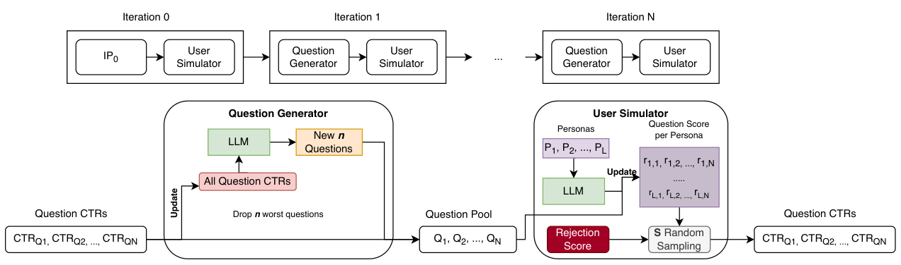

Generative Explore-Exploit: Training-free Optimization of Generative Recommender Systems using LLM Optimizers (生成式探索-利用：用 LLM 优化器免训练优化生成式推荐系统)
- 会议/期刊: ACL 2024 Main Proceedings
- 作者与机构: Lütfi Kerem Senel 等（LMU Munich / Amazon）
- 推荐链路定位: 端到端生成式（Open-set 内容生成 + CTE 反馈闭环）
- 研究方向: 生成式推荐与离散语义 ID / 大语言模型推荐 (LLM4Rec)
- 论文原文: https://arxiv.org/abs/2406.05255v1
- 开源代码: 暂未开源
TL;DR (1分钟核心速览)
传统生成式推荐器在开放集（如提问建议）上无法靠昂贵微调吸收反馈。本文提出免训练的生成式“探索-利用”框架：把物品池 CTR 作为 in-context 数据喂给 LLM 优化器，双路生成“探索新话题 + 利用高分形式”的新问题，迭代 15 轮淘汰低 CTR 项。在电商与维基两域的LLM 用户点击模拟器（S=5000、K=3、RS=11）下，EXPLORE-EXPLOIT 在全部 Persona 上稳定超越贪心 FULL-CTR，末轮 CTR 相对提升最高达 +28%（Quality 23.4% vs 18.2%），人工评估 88% 偏好末轮问题池。
Background & Motivation (背景与核心矛盾)
- 主流范式：LLM 生成式推荐器（Zheng et al. 2023、Li et al. 2023a）直接在开放集上生成物品/文本，但其内容质量改进仍需指令微调。
- 前人局限：① 持续性微调 LLM 成本极高，无法对海量输入上下文逐条调优；② 检索式/固定物品池范式对演化的目录与多样新用户失效。
- 核心洞察 (Key Insight)：Yang et al. (2023) 表明 LLM 具备“理解文本与其目标任务表现间关系”的 in-context 优化能力——那么把 CTR 当成文本证据塞进 prompt，LLM 就能在零梯度下自我优化生成。
- 本文切入点：用 CTR 反馈闭环连接 LLM 优化器，并显式引入探索相（explore）打破贪心利用的偏好锁死。
Method (核心方法设计)
1. 整体框架 (Overall Architecture)
给定主题 \(t\)，LLM 先生成初始物品池\(\mathrm{IP}_0\)（5 个问题）；每轮经由用户模拟器测量各问题的群体 CTR，随后丢弃\(n\)个最差项、生成\(n\)个新项，循环\(I=15\)轮。新项由两支提示驱动：FULL-CTR 直接给历史问题+CTR 让其生成高 CTR 问题（纯利用，易偏好锁死）；EXPLORE-EXPLOIT 则并行“探索提示（仅给 IP，不给 CTR，鼓励新话题）”与“利用提示（围绕最高 CTR 问题的主题变异）”，从而在最优形式的主题上与更广视角间平衡，避免\(IP_{i+1}\) 被单一主题饱和。
flowchart TD
A["主题 t → 生成初始 IP₀"] --> B["用户模拟器测 CTR"]
B --> C["丢弃 n 个最低 CTR 项"]
C --> D["探索提示：无 CTR → 生成新问题"]
C --> E["利用提示：给 CTR → 围绕最优主题变异"]
D --> F["更新 IP，迭代 I=15"]
E --> F
2. 关键设计拆解 (Key Designs)
- LLM in-context 优化器（免训练利用相）：痛点在于梯度更新成本不可承受；本文把 \((\text{question}, \text{CTR})\) 对拼进 prompt，让模型依赖正负样本自学“何种提问形式→高 CTR”的映射；无参数更新，物理直觉是让 LLM 在上下文中充当无梯度优化器。
- 生成式探索相（EXPLORE-EXPLOIT 的核心增量）：纯 FULL-CTR 只利用已观测偏好，会限制多样性。本文每轮额外给一份不含 CTR 的 IP，提示 LLM 生成与最优主题不同的新问题，实现“已知高参与度上利用 + 对潜在隐藏偏好主动探索”的双向覆盖。
- 用户点击模拟器（评估内核）：采用 Persona-问题相关性打分 \(r_{ij}=\mathrm{QS}(q_i,p_j,t)\)（温度 1 采样一次），再用温度\(T\)的 softmax 采样点击动作——\(P(\text{CLICK}|p_j,q_i)=\frac{e^{r_{ij}/T}}{e^{RS/T}+\sum_{q_k\in K}e^{r_{kj}/T}}\)，\(RS\)为“均不点击”的拒绝分数（实验\(T=1.5,\,RS=11\)）。\(RS<10\)会虚高 CTR（>90%），\(RS>12\)又压制提升空间，\(RS=11\) 兼顾真实性与可优化性。
Experimental Setup & Evaluation Protocol (实验设置与评估协议)
- 数据集与预处理: 非标准交互数据集，而以主题+Persona 构造群体：
| 领域 | 输入主题 | 规模 | Personas | 场景说明 |
|---|---|---|---|---|
| E-Commerce | Amazon 产品类别 | 50 类 | 5 种购物偏好（价格/质量/品牌/功能/伦理） | 商品探索式提问建议 |
| General Knowledge | Wikipedia 精选条目 | 50 篇 | 5 种阅读焦点（论述/历史/事件/人物/地点） | 条目追问建议 |
- 数据划分与防穿越: 无传统训练/测试切分；采用迭代在线反馈（每轮 \(I\)收集 5000 次点击模拟，\(K=3\)题展示、\(S=5000\)），末轮问题池与初始池对比即评测。
- 排名评测协议: 非全库排序，而是模拟点击 CTR（温度 softmax 动作采样，含拒绝项 RS=11），辅以相关性分数与人工两两偏好（188 对，双标注者）。
- 对比基线与超参: NO-DROP（只扩不丢）、RANDOM-CTR（随机 CTR）、PARTIAL-CTR（用 CTR 筛选但 prompt 不给 CTR）、FULL-CTR（全 CTR 贪心）。模型为 GPT-4-1106-preview，\(\mathrm{IP}\)大小 5、\(n=1\)、\(I=15\)；显著性用比例 Z 检验（\(p<.001\)）。
Key Experimental Results (实验关键数据)
1. 主实验对比 (Main Results)
末轮 CTR@IP15（%），加粗为最优，Improv. 相对最优基线：
| 场景/Persona | NO-DROP | RANDOM-CTR | PARTIAL-CTR | FULL-CTR | EXPLORE-EXPLOIT | Improv. |
|---|---|---|---|---|---|---|
| Price (电商) | 1.4 | 1.3 | 3.0 | 3.2 | 5.5 | +71.9% |
| Quality (电商) | 6.0 | 5.9 | 15.1 | 18.2 | 23.4 | +28.6% |
| Features&Func. (电商) | 13.7 | 14.1 | 25.7 | 26.3 | 29.5 | +12.2% |
| Ethical Cons. (电商) | 2.2 | 1.7 | 5.8 | 15.7 | 20.3 | +29.3% |
| 3-Preference (混合) | 2.8 | 2.7 | 6.2 | 7.3 | 9.5 | +30.1% |
| Discussion (维基) | 18.2 | 20.3 | 29.1 | 30.9 | 30.9 | 持平 |
| Event (维基) | 15.3 | 14.4 | 23.5 | 25.4 | 27.4 | +7.9% |
| Person (维基) | 10.1 | 9.4 | 19.2 | 20.8 | 25.1 | +20.7% |
2. 消融实验 (Ablation Study)
各方法本质是本文组件的逐步消融（末轮 CTR%）：
| 消融配置 | Quality | Ethical | 3-Preference | 核心说明 |
|---|---|---|---|---|
| NO-DROP | 6.0 | 2.2 | 2.8 | 无反馈，基本停滞 |
| RANDOM-CTR | 5.9 | 1.7 | 2.7 | 随机信号≈无效 |
| PARTIAL-CTR | 15.1 | 5.8 | 6.2 | 有 CTR 筛选，无 in-context 证据 |
| FULL-CTR | 18.2 | 15.7 | 7.3 | 全 CTR 贪心利用 |
| EXPLORE-EXPLOIT | 23.4 | 20.3 | 9.5 | +探索相 |
3. 关键实验发现 (Key Findings)
- CTR 反馈闭环是地基：PARTIAL-CTR 相对 NO-DROP/RANDOM-CTR 在 Quality 上从 6.0%→15.1%、Ethical 从 2.2%→5.8%，而随机/不丢方法全程不涨——说明信号驱动的“淘汰-生成”是唯一有效的机制。
- 探索相带来利用所不能及的增益：EXPLORE-EXPLOIT 相对贪心 FULL-CTR 在 Ethical（20.3 vs 15.7）、3-Preference（9.5 vs 7.3）、Event（27.4 vs 25.4，+8.8% 末轮）均显著领先，证实主动探索能挖出隐藏偏好而非被既有高分主题饱和。
- 迭代收敛且与人判一致：EXPLORE-EXPLOIT 从 IP₀→IP₁₅ 相关性分数提升约 +2 分、CTR 提 +7~18 个百分点；人工 25 对比较中 88% 偏好末轮问题池，LLM 打分与人工一致性达 77.3%。
Highlights & Limitations (亮点、对比与审稿批判)
- 与代表作对比: 相较检索式生成推荐（Zheng/Li 2023）——无需固定池、免训练；相较 FULL-CTR 这一自然变体——多了显式探索相；相比 LLM-as-rating-predictor（Liu 2023）——同框架内“生成+优化 CTR”一体。
- 可迁移亮点: ① 把数值型参与度信号作为 in-context 证据，实现零梯度的生成器持续优化；② “探索相/利用相”拆分提示词，可迁移至标题生成、摘要、追问建议等开放集生成。
- 审稿级局限批判: ① 全程仅用 LLM 用户模拟器，无真实用户 A/B，Persona 仅为群体级而非用户级个性化；② 强依赖 GPT-4，初步实验显示 <70B 开源模型难以在数值 CTR 上稳定推理；③ 仅验证提问生成单任务，与 bandit/奖励模型等优化范式的公平对比缺失。
Rating (四维评分)
- 方法创新性 (Novelty): ⭐⭐⭐⭐ （免训练 + 生成式探索-利用的组合新颖，但根基仍借力已知的 LLM in-context 优化能力）
- 评估协议与实验扎实度 (Protocol & Experiments): ⭐⭐⭐ （仅模拟点击+Persona，无真实榜单基准，靠人工 88% 偏好评估补足说服力）
- 写作与数学规范度 (Clarity & Rigor): ⭐⭐⭐⭐ （模拟器公式推导清晰、温度/RS 敏感性分析完整，但核心优化过程无严格数学刻画）
- 工业落地与复现价值 (Industrial & Practical Value): ⭐⭐⭐ （免微调可扩展至海量物品，但离线验证为主、依赖闭源大模型，落地仍待线上证实）